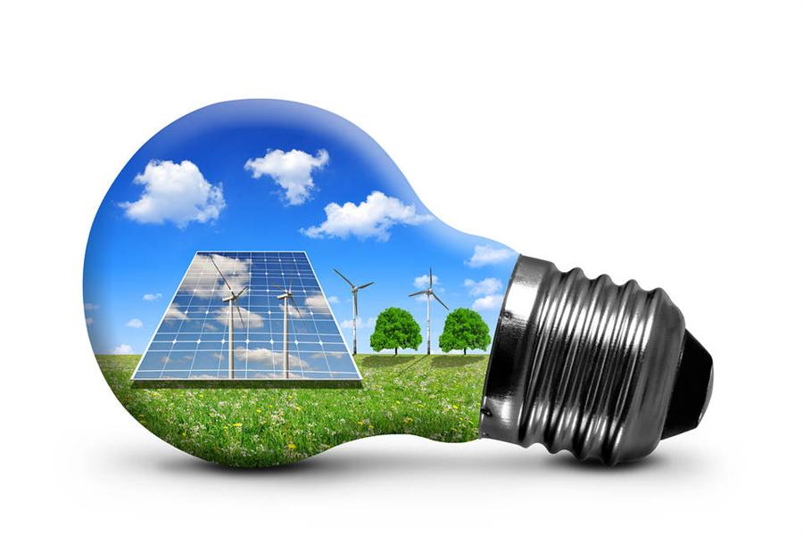

طاقة ناتجة عن مصادر طبيعية تتجدد بمعدل يفوق ما يتم استهلاكه من المصادر التي تتجدد باستمرار. وإن مصادر الطاقة المتجددة وفيرة وموجودة في كل مكان حولنا. تعرفوا ببعض من أهم مصادر الطاقة المتجددة.
جميع الحقوق محفوظه ايه وغيداءومياسه©